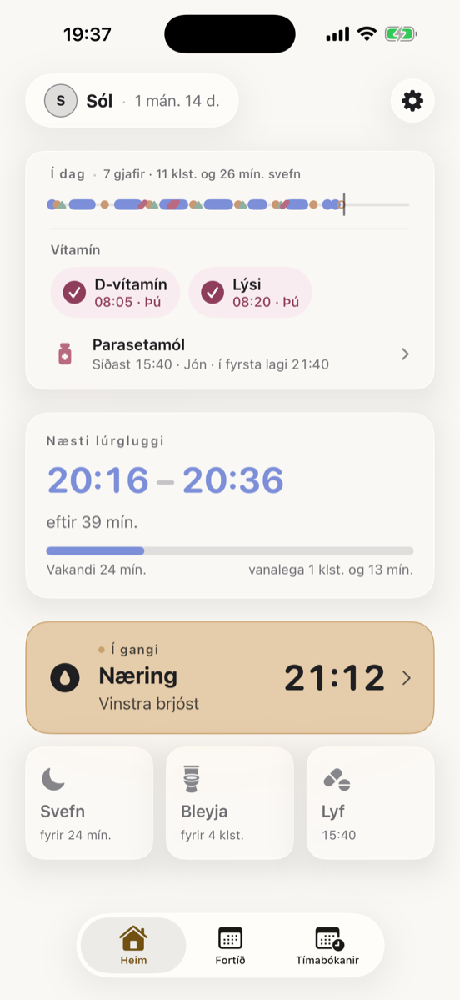
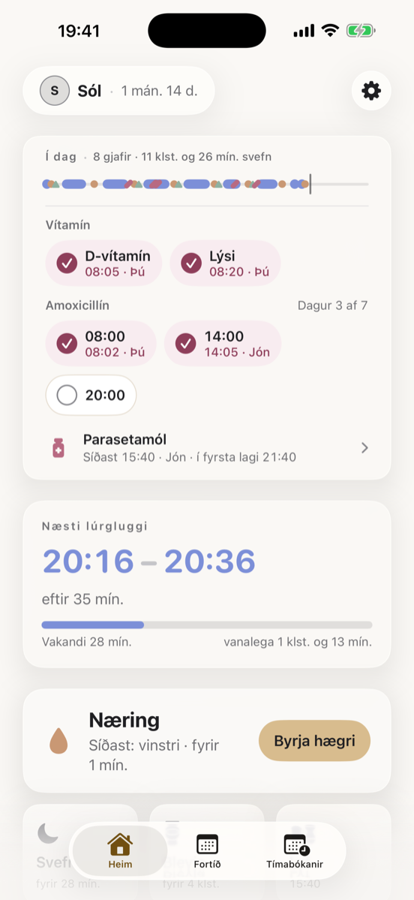
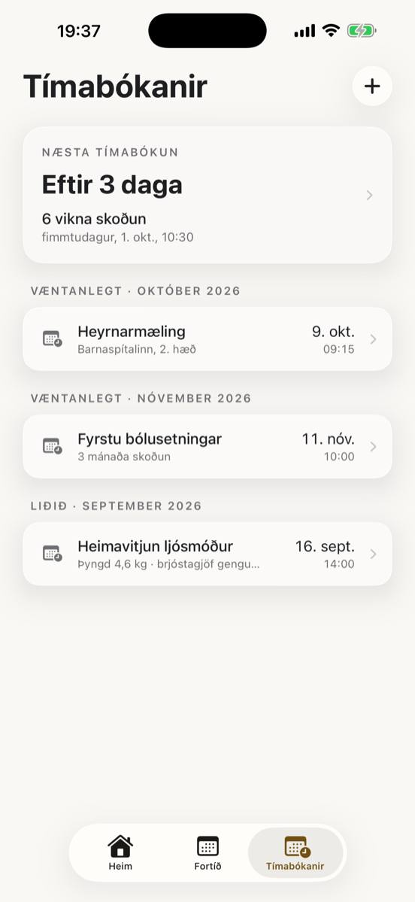
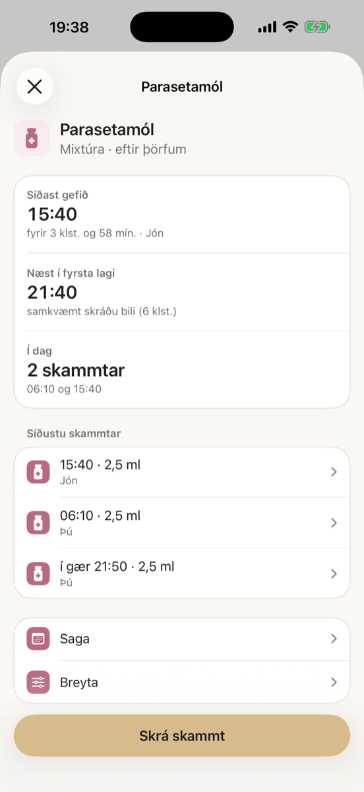

Svefn, matur og bleyjur — allt á einum stað, fyrir báða foreldra.
Skráðu daglegar venjur barnsins á augabragði og deildu þeim með hinu foreldrinu í rauntíma — engin þörf á að spyrja „hvenær svaf hann síðast?“

Hannað fyrir svefnlausar nætur
Ekki fleiri minnismiðar eða skilaboð fram og til baka — bara skýr yfirsýn yfir daginn hans.
Skráðu á augabragði
Svefn, matur og bleyjuskipti — hvert með sínum lit og sinni áminningu, skráð með einni snertingu. Ekkert flókið, ekkert stím.
Lyf og vítamín
Hakaðu við D-vítamín og lýsi og sjáðu hver gaf og hvenær. Skráðu lyf, líka eftir þörfum, með kúrum og áminningum — og taktu þau með í skýrsluna fyrir lækninn. Appið skráir bara það sem þú slærð inn; það reiknar aldrei út skammta.
Báðir foreldrar, sama mynd
Þið sjáið sömu skráningu í rauntíma, sama hvort þið eruð heima eða að heiman — enginn þarf að spyrja hvað hitt gerði.
Man hvora hlið
Barnið man sjálfkrafa hvora brjóstahlið þú notaðir síðast, svo þú þarft ekki að reyna að muna það sjálf/ur klukkan þrjú um nótt.
Finnur rétta svefngluggann
Barnið lærir svefnmynstrið hans og stingur upp á besta tímanum fyrir næsta lúr, áður en hann verður ofþreyttur.
Tímastilling á lásskjánum
Fylgstu með svefntíma beint á lásskjánum eða í Dynamic Island — engin þörf á að opna appið til að sjá hvað klukkan er orðin.
Svona lítur það út
Einfalt, hlýlegt og fljótlegt að nota — með annarri hendinni, upp úr svefni.



Algengar spurningar
Svör við því sem foreldrar spyrja oftast um Barnið.
Hvað er Barnið?
Barnið er íslenskt app fyrir iPhone sem hjálpar foreldrum að skrá svefn, brjóstagjöf og pelagjöf, bleyjuskipti, lyf, vítamín og tímabókanir ungbarns og deila skráningunni með hinu foreldrinu í rauntíma.
Er Barnið ókeypis?
Það er ókeypis að hlaða Barninu niður úr App Store og skrá daglegar venjur barnsins. Barnið Premium er valfrjáls áskrift með fría prufu sem bætir við tímabókunum, Svefntíma-spá, fleiri forráðamönnum og börnum og áminningum um lyf.
Geta báðir foreldrar notað appið saman?
Já. Þú býður hinu foreldrinu með boðskóða og þið sjáið sömu skráningu á sama barni í rauntíma, líka þegar annað ykkar er að heiman. Þriðji forráðamaðurinn krefst Premium.
Virkar Barnið án nettengingar?
Já. Skráningar vistast á símanum þótt engin nettenging sé til staðar og samstillast við hitt foreldrið þegar síminn tengist netinu aftur.
Hvar eru gögnin geymd og eru þau persónuleg?
Gögnin eru geymd á netþjónum á Írlandi (innan EES) og í símum þeirra sem deila barninu. Þau eru aldrei seld og engar auglýsingar eru í appinu. Þú getur eytt aðgangi og gögnum hvenær sem er í Stillingum. Nánar í persónuverndarstefnunni.
Get ég skráð lyf og vítamín ungbarna?
Já. Þú getur hakað við D-vítamín og lýsi á hverjum degi og séð hver gaf og hvenær, og skráð lyf, líka eftir þörfum og í kúrum. Appið skráir bara það sem þú slærð inn og reiknar aldrei út skammta.
Hvað er Svefntími í Barninu?
Svefntími er spá sem Barnið reiknar út frá svefnmynstri barnsins og stingur upp á besta tímanum fyrir næsta lúr, áður en barnið verður ofþreytt. Hún er hluti af Barnið Premium og er fyrst og fremst leiðbeining, ekki læknisráð.
Hvaða venjur get ég skráð með Barninu?
Svefn, brjóstagjöf (appið man hvora hliðina þú notaðir síðast), pelagjöf, mjólkurpumpun, bleyjuskipti, lyf, vítamín og tímabókanir eins og ungbarnaskoðun. Svefn má líka fylgjast með á lásskjánum og í Dynamic Island.
Er Barnið til fyrir Android?
Ekki enn. Barnið er eins og stendur aðeins til fyrir iPhone í App Store. Android-útgáfa er í þróun.
Barnið er komið í App Store
Ókeypis að hlaða niður. Sæktu appið og byrjaðu að skrá á augabragði.